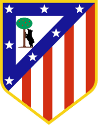

Athletico Madrid

Club Atlético de Madrid, commonly known as Atlético Madrid, or simply as Atlético or Atleti, is a Spanish professional football club based in Madrid, that plays in La Liga. The club play their home games at the Wanda Metropolitano, which has a capacity of 68,000.
In terms of the number of titles, Atlético Madrid is the third most successful club in Spanish football, behind Real Madrid and Barcelona. Atlético have won La Liga on 10 occasions, including a league and cup double in 1996; the Copa del Rey on 10 occasions; two Supercopas de España and one Copa Eva Duarte; in Europe, they won the European Cup Winners' Cup in 1962, were runners-up in 1963 and 1986, were Champions League runners-up in 1974, 2014 and 2016, won the Europa League in 2010 and in 2012, won the UEFA Super Cup in 2010 and 2012, as well as the 1974 Intercontinental Cup.
Atlético's home kit is red and white vertical striped shirts, with blue shorts, accompanied by blue and red socks. This combination has been used since 1911. During their history the club has been known by a number of nicknames, including Los Colchoneros ("The Mattress Makers"), due to their first team stripes being the same colours as old-fashioned mattresses. During the 1970s, they became known as Los Indios, allegedly due to the club signing several South American players after the restrictions on signing foreign players were lifted. However, there are a number of alternative theories which claim they were named so because their stadium is "camped" on the river bank, or because Los Indios (The Indians) were the traditional enemy of Los Blancos (The Whites), which is the nickname of the club's city rivals, Real Madrid. Felipe VI, the king of Spain, has been the honorary president of the club since 2003.